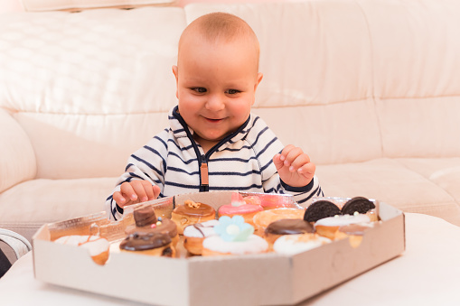

Delicious donuts

Las mejores donas las encontras en Delicious donuts. Esponjosas en forma de rosca, frita y generalmente glaseada o cubierta de chocolate. Mejora tu estado de ánimo por su contenido elevado de azúcar, podría aumentar los niveles de serotina, dopamina y adrenalina en tu cerebro, lo cual te ayudaría a reducir la carga de estrés o depresión en caso de que te sientas triste.
ACTION 1
ACTION 2